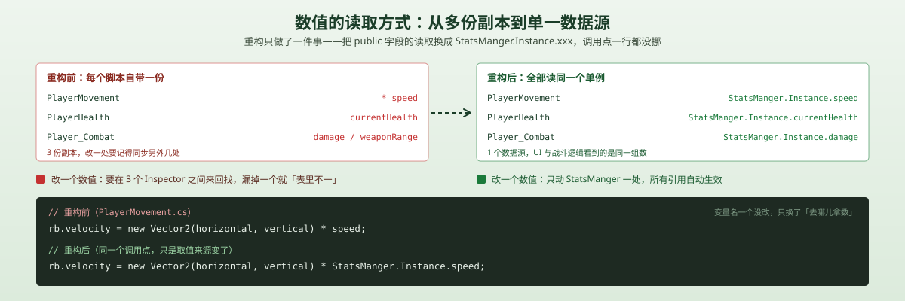
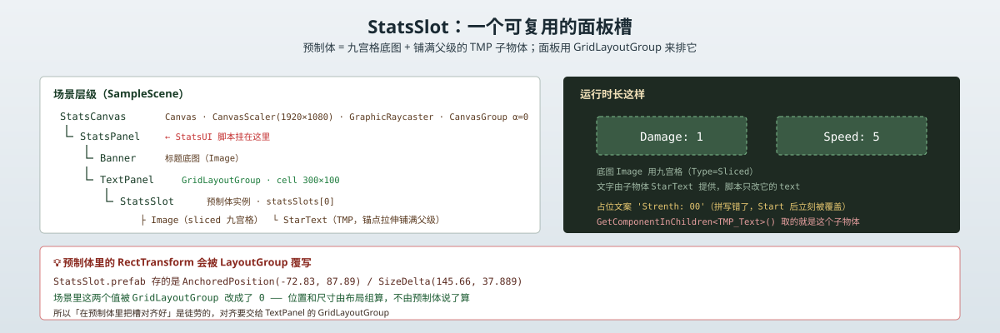
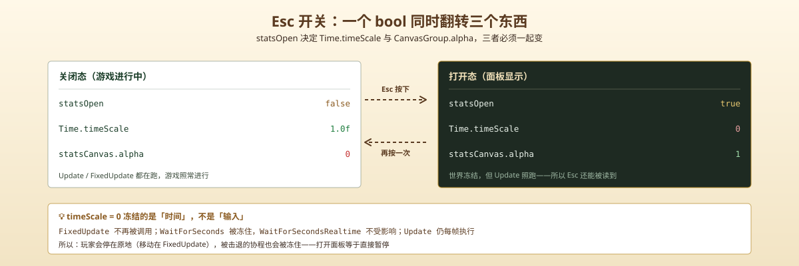

一句话说清这天的内容
做两件事：先把「速度、伤害、血量、武器范围、击退力」这些数字从三个脚本的 Inspector 里抽出来，集中到唯一的 StatsManger（单例）；再新建 StatsUI + StatsSlot 预制体，做一个按 Esc 打开的属性面板——打开时把 Time.timeScale 设成 0，整个游戏暂停，让玩家从容看数字。
脚本关系
| 脚本 | 角色 | 关键能力 |
|---|---|---|
StatsManger | 新 | 单例 Instance、三组 [Header] 字段 |
StatsUI | 新 | Esc 开关面板、Time.timeScale 时停、statsSlots[i] 写文字 |
PlayerHealth | 改 | 血量字段搬走，改成读 StatsManger.Instance.currentHealth |
PlayerMovement | 改 | 速度改成读 StatsManger.Instance.speed，其余不变 |
Player_Combat | 改 | damage / weaponRange / 击退参数全部改成读单例 |

调用链（打开面板）：
Esc 按下 → Input.GetButtonDown("ToggleStats") → StatsUI.Update() → Time.timeScale = 0 + statsCanvas.alpha = 1 + statsOpen = true
调用链（面板启动时填值）：
Start() → UpdateAllStats() → UpdateDamage() + UpdateSpeed() → statsSlots[i].GetComponentInChildren<TMP_Text>().text = "Damage: " + StatsManger.Instance.damage
先有唯一数据源，才有只依赖一个引用的 UI
Day 5 结束时，数值的分布是这样的：
PlayerMovement.speed—— 移动速度PlayerHealth.maxHealth/currentHealth—— 血量Player_Combat.damage/weaponRange—— 伤害与武器范围Enemy_Combat/Enemy_Knockback参数里还散着击退力、眩晕时间
这带来一个很具体的麻烦：Player_Combat 调用 Enemy_Knockback.Knockback() 时传的击退力、击退时长、眩晕时间，全都是从敌人自己身上取的，跟玩家那套数值没有统一出处。改一个「击退力度」要在两个脚本的 Inspector 之间来回找，漏掉一个就出现「表里不一」。
更要紧的是下一个需求：要做属性面板。面板要显示 damage 和 speed——它去哪拿？如果还是各脚本各管各的，面板就得同时持有 PlayerMovement、Player_Combat、PlayerHealth 三个引用，任何一个改名或者换挂载点都会断。
所以顺序很清楚：先有唯一数据源，才有 UI。
StatsManger：收拢全部数值的单例
public class StatsManger : MonoBehaviour
{
public static StatsManger Instance;
[Header("Combat Stats")]
public int damage;
public float weaponRange;
public float knockbackForce;
public float knockbackTime;
public float stunTime;
[Header("Movement Stats")]
public float speed;
[Header("Health Stats")]
public int maxHealth;
public int currentHealth;
private void Awake()
{
if (Instance == null)
{
Instance = this;
}
else
{
Destroy(gameObject);
}
}
}设计 1：单例解决的是「到处都要拿同一份数」
没有单例的话，想让 Player_Combat 拿到速度，只能 FindObjectOfType<PlayerMovement>() 或者挂 public 引用。FindObjectOfType 每次调用扫全场，public 引用则是「谁都要在 Inspector 里拖一根线」。
单例把它变成一行：StatsManger.Instance.speed。代码里任何地方、任何时刻、不需要持有引用，只要场景里有这个对象就行。
设计 2：[Header] 是给 Inspector 用的，不是给代码用的
damage、speed、maxHealth 这些字段用了 public 而不是 [SerializeField] private。原因很直接：它们要在 Inspector 里拖数值调玩法，public 是最省事的写法。[Header("Combat Stats")] 则是给 Inspector 分组——十来个字段挤在一起，不分组的后果是「改速度的时候把眩晕时间也改了」。
这套东西是教程阶段的合理选择；等数值多到需要配表，就会换成 ScriptableObject。
设计 3：Awake 里判空，重复的销毁自己
if (Instance == null) { Instance = this; }
else { Destroy(gameObject); }场景只放了一个 StatsManager，但这段代码的意义是防止未来有人不小心放了第二个。先把 Instance 占了，后来的自己销毁——这样 StatsManger.Instance 永远指向第一个。

💡 坑 1：类名把 Manager 拼成了 Manger
文件叫 StatsManger.cs，类名也是 StatsManger——少了一个 a。这不是我手误，是教程源码里就这么拼的，我照抄了。
它不会编译报错，因为类名和文件名一致。但它会蔓延：现在项目里到处都是 StatsManger.Instance.xxx，一共 11 处引用。等哪天想改对，就得一次改干净（脚本名 + 类名 + 全部引用），改一半的局面是编译不过。
教训：从教程抄代码时，类名和变量名的拼写要过一遍脑子。isKnockack（Day 5 留下的，少一个 b）也是同一个毛病。这些拼写错误在编辑器里不报错，只会让人以后搜索的时候找不到东西。
StatsUI：Esc 开关 + 时停
public class StatsUI : MonoBehaviour
{
public GameObject[] statsSlots;
public CanvasGroup statsCanvas;
private bool statsOpen = false;
private void Start()
{
UpdateAllStats();
}
private void Update()
{
if (Input.GetButtonDown("ToggleStats"))
{
if (statsOpen)
{
Time.timeScale = 1.0f;
statsCanvas.alpha = 0;
statsOpen = false;
}
else
{
Time.timeScale = 0;
statsCanvas.alpha = 1;
statsOpen = true;
}
}
}
public void UpdateDamage()
{
statsSlots[0].GetComponentInChildren<TMP_Text>().text = "Damage: " + StatsManger.Instance.damage;
}
public void UpdateSpeed()
{
statsSlots[1].GetComponentInChildren<TMP_Text>().text = "Speed: " + StatsManger.Instance.speed;
}
private void UpdateAllStats()
{
UpdateDamage();
UpdateSpeed();
}
}设计：一个 bool 同时翻转三样东西
statsOpen 不是单纯的「面板开着没开」，它是三件事的共同开关：
| 变量 | 关 | 开 |
|---|---|---|
statsOpen | false | true |
Time.timeScale | 1.0f | 0 |
statsCanvas.alpha | 0 | 1 |
三者必须一起变。如果只把 alpha 设成 1 忘了 timeScale，面板出来了但游戏还在跑，敌人照样打你；如果只设 timeScale 忘了 alpha，游戏停了但屏幕上什么都没有——玩家会以为游戏卡死了。
把「暂停」和「显示面板」绑成一个动作，是这个面板最核心的设计。

为什么用 alpha 而不是 SetActive
把面板物体 SetActive(false) 也能隐藏，但 CanvasGroup.alpha 有两点好处：
- 可以补间。以后想加淡入淡出，只要在协程里 lerp
alpha，SetActive做不到（一关就整个消失）。 - 不影响布局。
SetActive(false)的对象会从 GridLayoutGroup 的布局计算里消失，再打开时位置会重算；alpha = 0的对象还在原位待着。
面板的 CanvasGroup 初始 alpha 在场景里就是 0——第一次打开之前，它一直是「隐形但存在」的状态。
💡 坑 2：StatsUI 和它控制的 CanvasGroup 不在同一个物体上
StatsUI 挂在 StatsPanel 上，但它控制的 statsCanvas 指的是父物体 StatsCanvas 上的 CanvasGroup。字段是 public CanvasGroup statsCanvas;，靠 Inspector 拖引用绑定的——不是 GetComponent 拿的。
场景层级是这样的：
StatsCanvas（Canvas + CanvasScaler + GraphicRaycaster + CanvasGroup）└ StatsPanel（StatsUI） └ TextPanel（GridLayoutGroup） └ StatsSlot ×2（预制体实例）
后果：如果谁图省事把 statsCanvas 改成 GetComponent<CanvasGroup>()，会拿到 null——因为 StatsPanel 自己身上没有 CanvasGroup，只有它的父级有。跨层级引用必须显式拖线。
💡 坑 3：Time.timeScale = 0 冻的是时间，不是输入
这是今天最值得写的一条。Time.timeScale = 0 之后：
| 受影响 | 不受影响 |
|---|---|
FixedUpdate 不再被调用 | Update 仍然每帧执行 |
Time.deltaTime 变成 0 | Time.unscaledDeltaTime 正常 |
WaitForSeconds 永久等待 | WaitForSecondsRealtime 正常 |
| 物理、动画 | 输入（Input.GetButtonDown） |
关键推论：Update 照跑，所以 Esc 还能被读到——否则面板就再也关不掉了。这是这个设计能成立的前提。
但代价是：如果你在正被击退的那段眩晕时间里按了 Esc，KnockbackCounter 协程会被冻住。因为协程里 yield return new WaitForSeconds(stunTime) 用的是缩放后的时间，timeScale = 0 意味着它永远不会往下走。等你关掉面板（timeScale 恢复 1.0f），协程才继续倒数。
实际表现是：暂停期间玩家角色定在原地，关掉面板后继续被击飞完剩下的时间。不算 bug，但如果不理解 WaitForSeconds 与 timeScale 的关系，会以为协程坏了。
要绕开的话，把协程里的等待换成：
yield return new WaitForSecondsRealtime(stunTime);WaitForSecondsRealtime 不读 timeScale，暂停期间也会照常倒数。
💡 坑 4：UpdateDamage / UpdateSpeed 是 public，但没人调
两个方法都是 public，看起来像是给外部改数值后刷新用的——但全项目除了 UpdateAllStats() 之外没有任何地方调用它们。
而 UpdateAllStats() 只在 Start() 里被调一次。也就是说：面板上的数字是启动那一刻的快照，之后永远不变。
现在看不出问题，因为这一版还没有任何「升级属性」的玩法。但只要加上吃道具加速度，面板就会显示旧值。正确做法是让 StatsManger 在数值变化时抛事件，StatsUI 订阅：
// StatsManger 里
public event System.Action OnStatsChanged;
public void SetDamage(int v) { damage = v; OnStatsChanged?.Invoke(); }Day 6 先不做，记在文末的洞里。
面板槽：StatsSlot 预制体
面板要显示 Damage 和 Speed 两行，两行的结构完全一样，所以做成预制体。
层级：
StatsSlot（RectTransform + Image）
└ StarText（TMP_Text）- 根物体：Layer 5（UI），
Image组件用九宫格（m_Type: 1= Sliced），负责底图 - 子物体 StarText：锚点
(0,0)–(1,1)铺满父级，TMP_Text负责文字，水平居中
StatsUI 只改子物体的文字：
statsSlots[0].GetComponentInChildren<TMP_Text>().text = "Damage: " + StatsManger.Instance.damage;用 GetComponentInChildren（不是 GetComponent）——因为 TMP_Text 在子物体上。这也是预制体结构决定调用方式的例子。
面板怎么排这两个槽：GridLayoutGroup
TextPanel 上挂了 GridLayoutGroup：
m_CellSize: {x: 300, y: 100}
m_Spacing: {x: 0, y: 1}
m_Constraint: 0
m_Padding: {Left: 7, Top: 12, ...}每格 300×100，竖直间隔 1 像素。两个 StatsSlot 实例放进 statsSlots 数组（数组长度 8，statsSlots[2..7] 全是空的 fileID，预留）。
💡 坑 5：预制体里的 RectTransform 会被布局组覆写
StatsSlot.prefab 里存的位姿是：
m_AnchoredPosition: {x: -72.83099, y: 87.88697}
m_SizeDelta: {x: 145.66, y: 37.889}
m_AnchorMin/Max: {0.5, 0.5}但场景里实例化之后，这些值都被改成了 0：
m_AnchoredPosition: {x: 0, y: 0}
m_SizeDelta: {x: 0, y: 0}
m_AnchorMin/Max: {0, 0}原因是 GridLayoutGroup 接管了子物体的位置和尺寸。布局组每帧算好格子，直接写回 RectTransform——预制体里辛苦对齐的数值，进场景就作废。
教训：如果一个物体的父级挂了 LayoutGroup，就不要再手工调它自己的 AnchoredPosition / SizeDelta，那些值不会生效。想控制位置，改布局组的 m_CellSize、m_Spacing、m_Padding。
💡 坑 6：'Strenth: 00' 是错的，但你看不到
StatsSlot.prefab 里 StarText 的默认文字是：
m_text: 'Strenth: 00'Strenth 拼错了（应该是 Strength），而且这个槽现在放的是 Damage，跟 Strength 压根没关系。
之所以看不出问题，是因为 StatsUI.Start() 里紧接着 UpdateAllStats() 把它们覆盖成了 "Damage: 1" 和 "Speed: 5"。但如果 StatsUI 没挂、引用没拖，玩家看到的就是 Strenth: 00。
这类「占位文案」最好写成 Damage: -- 这种明显是占位的格式；写成看起来像真数据的 Strenth: 00，出问题时反而不好判断。
整体设计思路
1. 为什么先重构再做 UI
从代码量看，重构这一半几乎是「纯替换」——speed 变 StatsManger.Instance.speed，currentHealth 变 StatsManger.Instance.currentHealth，调用点的结构一行都没改。
但顺序不能反。如果先做 UI，StatsUI 就得同时持有三个脚本的引用，等项目变大就会长成这样：
// 每加一个要显示的属性，就多一个引用
public PlayerMovement playerMovement;
public Player_Combat playerCombat;
public PlayerHealth playerHealth;
// ... text = "" + playerCombat.damage + playerMovement.speed + playerHealth.currentHealth;先收拢数值，UI 就只需要认识 StatsManger 一个东西。重构不是「为了好看」，是为了让下一步变简单——这也是今天唯一一件「不改功能只改结构」的工作。
2. 单例的取舍
单例（StatsManger.Instance） | public 引用 | FindObjectOfType | |
|---|---|---|---|
| 取值写法 | 一行 | 一行 | 一行 |
| 需要拖引用 | 否 | 每个脚本都要 | 否 |
| 查找开销 | 无 | 无 | 每次调用扫全场 |
| 可测试性 | 差（全局状态） | 好 | 差 |
| 多实例 | 靠 Awake 兜底 | 天然支持 | 会拿到随机一个 |
教程阶段选单例是对的：它的取值成本最低，而当前项目只有一个玩家。它的代价（全局状态、不好做单元测试）在这个规模下不构成问题。
真正会踩的是「多实例」：如果再有一个「敌人属于自己的 StatsManger」，单例就崩了——Instance 只指向第一个。到那时候就该换成「每个角色持有一份 Stats 数据对象」的结构。
3. 暂停面板 vs 实时面板
暂停式（timeScale = 0） | 实时式 | |
|---|---|---|
| 玩家压力 | 无，慢慢看 | 敌人还在打 |
| 实现 | 一个 bool + 两行赋值 | 要处理「面板挡住视野」 |
| 风险 | 忘恢复时停 → 游戏卡死 | 无 |
| 适用 | 单机 RPG / 背包 / 设置 | 联机 / 动作游戏 |
单机 ARPG 用暂停式是常见选择。它的最大风险是状态没恢复——比如面板打开时切场景、或者异常退出，timeScale 停在 0，整个游戏看起来就死了。稳妥的做法是在 OnDisable / OnDestroy 里兜底复位：
private void OnDisable()
{
Time.timeScale = 1.0f; // 兜底：物体被禁用时一定把时间放开
}4. 入场动画 vs 直接开关
现在 alpha 是硬切（0 或 1），没有过渡。加淡入只要把赋值换成协程 lerp——这也是当初选 CanvasGroup.alpha 而不是 SetActive 的原因。不过要注意协程里的 Time.deltaTime 此时是 0（timeScale 已经是 0 了），得用 Time.unscaledDeltaTime：
float t = 0;
while (t < 0.15f)
{
t += Time.unscaledDeltaTime;
statsCanvas.alpha = Mathf.Lerp(0, 1, t / 0.15f);
yield return null;
}这个小坑——「暂停时想播动画」必须用 unscaled 时间——和坑 3 是同一个根因。
明天要补的洞
- 属性变化时面板不刷新：
UpdateDamage()/UpdateSpeed()没有外部调用者，数字是启动快照。要加事件（OnStatsChanged）或定时刷新。 - 没有属性来源：现在所有数值都是 Inspector 写死的，游戏里没有任何途径改变它们。下一步要有升级 / 捡道具。
- 敌人属性没纳入：
StatsManger只管玩家，敌人的damage/maxHealth仍然自带一套。敌人多了之后要抽成通用的Stats数据类。 - 时停没有兜底：物体被禁用 / 场景切换时
timeScale可能停在 0，要加OnDisable复位。 - 没有淡入淡出：alpha 硬切，加补间要用
Time.unscaledDeltaTime。 - 暂停时仍能挥剑：
timeScale = 0挡住了FixedUpdate移动，但Update里的Input.GetButtonDown("Slash")仍会触发攻击。要在面板打开时禁用Player_Combat。
一句话总结
今天把「数值」这件事理顺了：StatsManger 单例让 11 处引用有了唯一出处，StatsUI 用一个 bool 同时翻转 timeScale 与 alpha 做出暂停式面板，StatsSlot 预制体 + GridLayoutGroup 负责排版。最值得记住的是 Time.timeScale = 0 的边界——它冻结 FixedUpdate 和 WaitForSeconds，却放过 Update 与输入，这个不对称既是面板能开关的原因，也是协程会被冻住的原因。